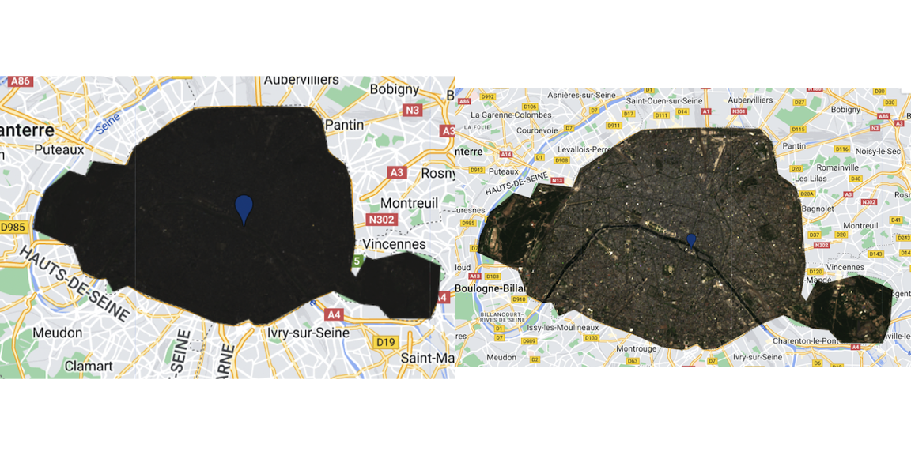

Initially launched at a small scale in 2010 for Scientists and NGO’s, GEE has now been made available freely to the general public and provides a powerful tool for geo-spatial analysis! The ability of this service to analyse large scale data and provide results within seconds is not only unprecedented, but also allows for efficient research at high levels of granularity and methods that were computationally unavailable for the individual user. Instead of having to store this information locally, users like myself can use the Google Cloud Platform capabilities instead of local storage and machines.
This entry is an initial usage of the platform to familiarise myself with it, and provide initial impressions.
This entry will focus on analysis the characteristics of the ‚Äòcity of love‚Äô and possibly one of the most exciting places in the world with exquisite food, Paris, France! üá´üá∑
Exploring the Examples in the script editor
The interface is easy to use and provides a panoply of different scripts to get accustomed to the different uses of the platform.
Learning to use Javascript - JavaScript (JS) is a scripting/programming language which allows for the implementation of dynamic behaviour and updating control multimedia. In our case, we use JavaScript to use the GEE API and access their satellite imagery data and analysis capabilities (GEE platform).
Exploring Paris with GEE
We start by playing around with the Earth Engine to get a better idea and understanding of what tools are available to us. Our aim is to analyse Paris and it’s characteristics so we start off by taking the appropriate shapefile ('GID_2 == "FRA.8.3_1"') from GADM.
The images we use are from L-8 and Level 2, Collection 2 tier 1 images (additional info on L-8 tiers here). They were collected between June 2020 and October 2022.
After being able to clip the city as a whole, we compare the images:
Left image shows Clipped Paris untouched (aka without any transformations). We see that the image is mostly black as no correction has been made
Right Image shows Paris with the appropriate adjustment for surface reflectance through scaling factors
Taking the Analysis further
Texture Analysis in GEE
Similar to one of our previous analyses, we choose to look at Gray Level Co-Occurrence Matrix (GLCM), a texture analysis which considers the spatial relationships of pixels in an image. Below, we include the contrast GCLM, which uses the contrast between neighbouring pixels as a measure of the texture.
As a sanity check, we interpret the results from the image:
- Low Contrast at points in group 1 as these are the park areas of Paris (‘bois de Vincennes’ on the right and ‘hippodrome de Long-champs’ on the left). Due to low contrast, the GCLM does not indicate much texture change in the area, which is expected as they are all park/woodland areas
- High contrast at point 2, as this is the cultural and touristic center, notably including the Eiffel tower, small parks, Haussmannian 19th century buildings and recently built elements. So it is not a surprise that this area has high contrast values.
- Finally, area 3 follows part of the Seine. As this is the main water body in the city, we would expect high values of similarity which is is the case as there are many light pixels grouped together in that area!
PCA in GEE
Although not as intuitive as the rasterPCA in RStoolbox, PCA analysis is possible in GEE. we find that the first 4 clusters account for more than 98% of the total variance of the studied area.
Below we have an illustration of the four main groups visible. We see that a great deal of the variance is captured in the first frame. This is not a surprise as Paris is an Urban area and has quite strong similarities in terms of colours, and does not have a lot of variance with big contrasts between urban and green areas for example (parks are quite small compared to other cities, say London).
Band Maths
NDVI
The Normalised Vegetation Index is the usual indicator of vegetation in an area. Here it makes sense that the values are higher in the park areas, closer to the outskirts of the city, than in the center which has a very high population density.
NDMI
The Normalised Moisture Index allows to collect information on the amount of moisture in the soil. The bands are calculated as follows in GEE:
var NDMI = clip.select('SR_B5').subtract(clip.select('SR_B6'))
.divide(clip.select('SR_B5').add(clip.select('SR_B6')))The values go from -1 to 1, with the brown areas having the highest positive values. Again, most of the values are around 0 as the city has high building density. Nonetheless, the parks have high moisture value, with a strong brown colour.
GCI
The Green Chlorophyll Index is an index that we have not analysed before but mentioned before. We thought using it in this project would be interesting to see the results but also it’s implementation in GEE. It was initially used in for MODIS ( Gitelson, Kaufman, and Merzlyak (1996) ) but as bands have similar characteristics between platforms, it can also be used on L-8.
var GCI = clip.select('SR_B5').divide(clip.select('SR_B5').add(1))Below we have the illustration of the GCI. The values range between -1 and 1, with bright red representing a value of 1. In the case of Paris, we see that the values are mainly pinkish, representative of an urban environment, which is to be expected in Paris.
Personal Reflection
Using GEE was eye-opening, seeing how efficient getting access to satellite imagery was compared to using SNAP and other sources such as Copernicus Open Access Hub (for S-2) and Earth Explorer (for L-8).
This initial project was a very good opportunity to start getting accustomed to using JS and putting into practice. Although, I did not use much of my own code for this week (majoritarily inspired from CASA0023 and web-sources), I was still able to understand local areas and tweak the code accordingly! I was also able to build on the band math, using indices such as NDMI as my understanding of Javascript and Bands has improved.
I was able to also add mote interactivity in the presentation of my findings, notably when presenting my findings for PCA an illustrating this in an embedded Google Slides using HTML and ‘iframe’ directly.
This was a very plentiful diary entry, as it has given me many ideas but also shown me the GEE has many options which I want to look into. Notably looking at the evolution of areas over time, with examples in mind aiming to show how global warming, droughts and overconsumption have let to considerable changes in water levels in certain areas (i.e. lake, reservoir, damn etc.)